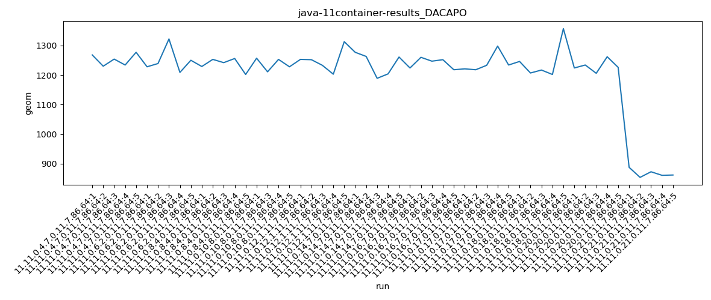
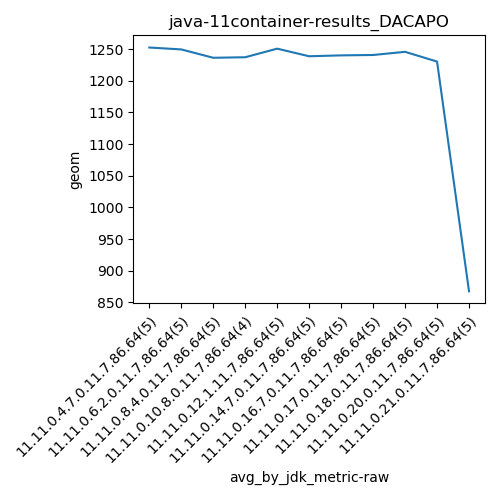

java-11 DACAPO
Context at bottom
/home/jvanek/git/benchmarks-in-nested-virtualisation-toolchain/final_results/container_results/container-results_J2DBENCH
java-11
DACAPO
/home/jvanek/git/benchmarks-in-nested-virtualisation-toolchain/final_results/container_results/container-results_RADARGUNs3
java-11
DACAPO
/home/jvanek/git/benchmarks-in-nested-virtualisation-toolchain/final_results/container_results/container-results_RADARGUNs1
java-11
DACAPO
/home/jvanek/git/benchmarks-in-nested-virtualisation-toolchain/final_results/container_results/container-results_DACAPO
java-11
DACAPO
container-results_DACAPO
final score
Expected number of java-11 JDKs: 11
1st avgmed_alljdks_metric:
/home/jvanek/git/benchmarks-in-nested-virtualisation-toolchain/final_results/result_processing.py /home/jvanek/git/benchmarks-in-nested-virtualisation-toolchain/final_results/container_results/container-results_DACAPO geom False
values: [1268, 1230, 1254, 1234, 1277, 1228, 1239, 1322, 1209, 1250, 1229, 1253, 1242, 1256, 1202, 1257, 1211, 1253, 1228, 1253, 1252, 1233, 1203, 1313, 1277, 1263, 1189, 1204, 1261, 1224, 1260, 1247, 1252, 1218, 1221, 1218, 1233, 1298, 1234, 1246, 1207, 1217, 1202, 1357, 1224, 1234, 1206, 1262, 1226, 888, 854, 873, 861, 862]

Expected number of iterations: 5
final number of values: 54 out of 55
Pass rate: 98.2%
values: (854, 1357, 1207.6666666666667, 1234)

** accuracy from all jdks and runs
more is better
MIN: 854
MAX: 1357
AVG: 1207.6666666666667
MED: 1234
Relative differences 1:
MIN-MAX: 37.0 %
MIN-AVG: 29.0 %
MIN-MED: 31.0 %
MAX-MIN: -59.0 %
MAX-AVG: -12.0 %
MAX-MED: -10.0 %
AVG-MED: 2.0 %
stored to java-11.properties. sort | uniq that!
2nd avgmed_by_jdk_metric:
values: [1252.6, 1249.6, 1236.4, 1237.25, 1250.8, 1238.8, 1240.2, 1240.8, 1245.8, 1230.4, 867.6]

values: [1254, 1239, 1242, 1253, 1252, 1261, 1247, 1233, 1217, 1226, 862]

values: (867.6, 1252.6, 1208.2045454545455, 1240.2)
values: (862, 1261, 1207.8181818181818, 1242)

** accuracy from all jdks where runs were avged
more is better
MIN: 867.6
MAX: 1252.6
AVG: 1208.2045454545455
MED: 1240.2
Relative differences 1:
MIN-MAX: 31.0 %
MIN-AVG: 28.0 %
MIN-MED: 30.0 %
MAX-MIN: -44.0 %
MAX-AVG: -4.0 %
MAX-MED: -1.0 %
AVG-MED: 3.0 %
stored to java-11.properties. sort | uniq that!
** accuracy from all jdks where runs were medianed
more is better
MIN: 862
MAX: 1261
AVG: 1207.8181818181818
MED: 1242
Relative differences 1:
MIN-MAX: 32.0 %
MIN-AVG: 29.0 %
MIN-MED: 31.0 %
MAX-MIN: -46.0 %
MAX-AVG: -4.0 %
MAX-MED: -2.0 %
AVG-MED: 3.0 %
stored to java-11.properties. sort | uniq that!
/home/jvanek/git/benchmarks-in-nested-virtualisation-toolchain/final_results/container_results/container-results_SPECJBB
java-11
DACAPO
/home/jvanek/git/benchmarks-in-nested-virtualisation-toolchain/final_results/container_results/container-results_JMH
java-11
DACAPO
pass rates:
container-results_DACAPO=98.2%
Context:
- container_results
- DACAPO